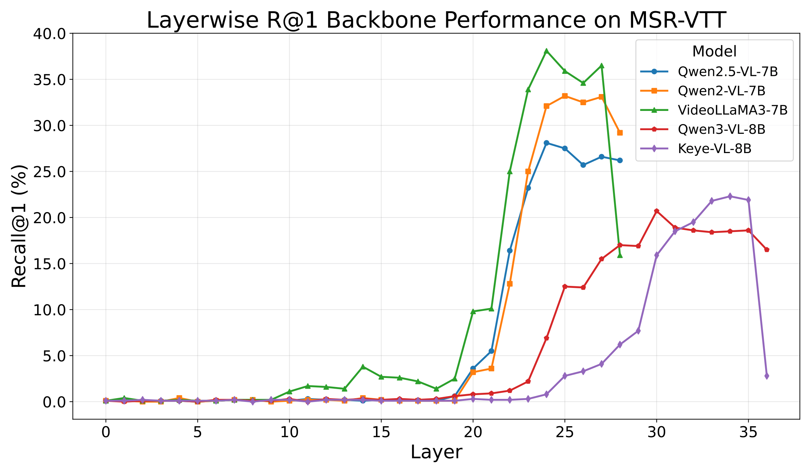
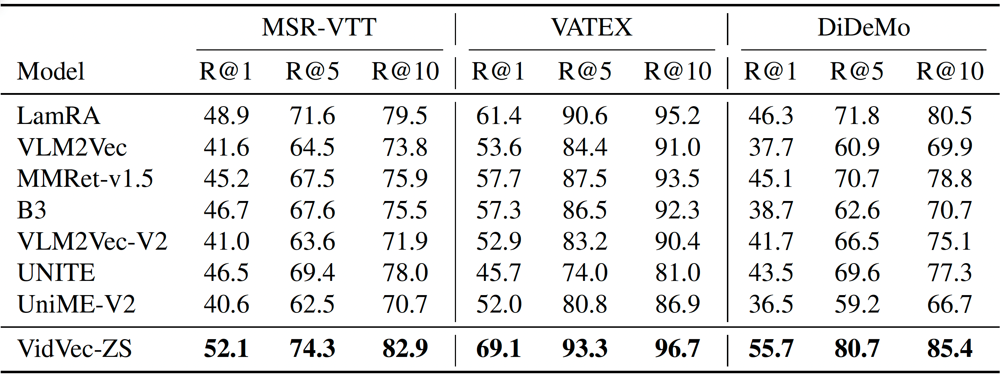
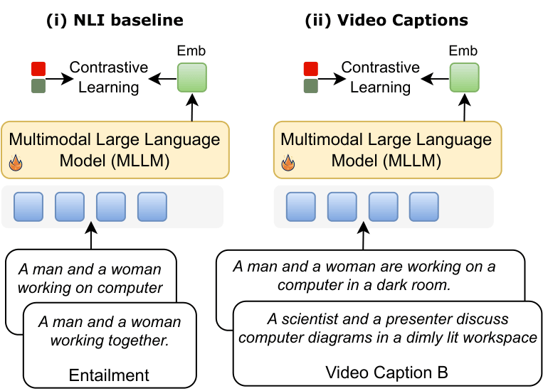
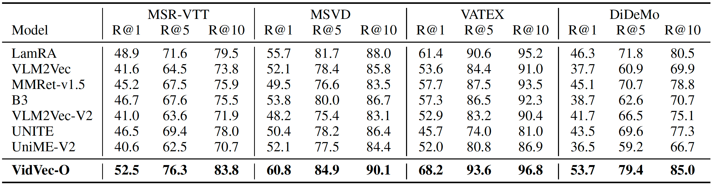
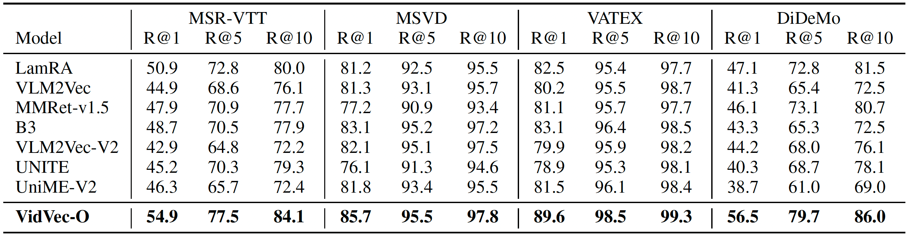
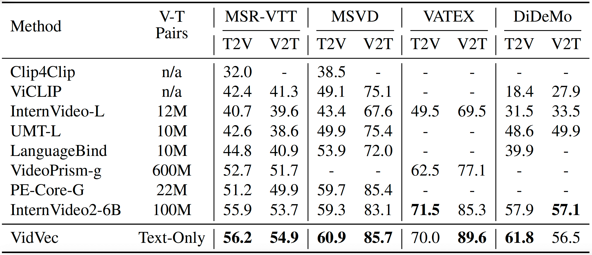

Abstract
Recent studies have adapted generative Multimodal Large Language Models (MLLMs) into embedding extractors for vision tasks, typically through fine-tuning to produce universal representations. However, their performance on video remains inferior to Video Foundation Models (VFMs). In this paper, we focus on leveraging MLLMs for video–text embedding and retrieval. We first conduct a systematic layer-wise analysis, showing that intermediate (pre-trained) MLLM layers already encode substantial task-relevant information. Leveraging this insight, we demonstrate that combining intermediate-layer embeddings with a calibrated MLLM head yields strong zero-shot retrieval performance without any training. Building on these findings, we introduce a lightweight text-based alignment strategy which maps dense video captions to short summaries and enables task-related video–text embedding learning without visual supervision. Remarkably, without any fine-tuning beyond text, our method outperforms current methods, often by a substantial margin, achieving state-of-the-art results across common video retrieval benchmarks.
Zero-Shot Retrieval
A key insight of VidVec is that off-the-shelf MLLMs already encode substantial retrieval-relevant information in their hidden representations. We conduct a systematic layer-wise analysis across multiple MLLM backbones, revealing that selecting appropriate intermediate layers yields strong zero-shot retrieval performance — even without any alignment or retrieval-specific fine-tuning.

While early layers contain little retrieval-relevant signal, several mid- to late-stage intermediate layers achieve markedly stronger performance. Among all evaluated models, VideoLLaMA3-7B attains the best overall zero-shot performance from its intermediate layers.
Further gains are obtained by reranking with a calibrated MLLM head: each query–candidate pair is evaluated with a binary relevance question, and the likelihood of the affirmative token is used as the reranking score. This two-stage approach requires no training whatsoever.
Despite conducting no training, VidVec-ZS outperforms all prior MLLM embedders — which are trained to produce vision–language embeddings — on all three benchmarks, achieving notable gains in Recall@1 of +3.1%, +7.7%, and +9.4% on MSR-VTT, VATEX, and DiDeMo, respectively.

In-Context Optimization
Beyond zero-shot, VidVec introduces a lightweight in-context optimization strategy that achieves further gains using only ~60K text-only pairs and no visual data. Instead of conventional NLI-style text pairs, we map dense video captions to short summaries, creating a text-to-text training signal that implicitly captures visual content and temporal dynamics.
The detailed descriptions are aligned with the full video content, while the short summaries act as compact textual anchors aligned with the query text. This formulation encourages the model to learn a visually grounded "summarization" process that effectively mirrors video encoding — without ever seeing a video during training.
Our in-context approach not only leverages video-related textual pairs, but also uses detailed video captions aligned with video content at inference time, together with short summaries that relate directly to the input text.

Results
We evaluate VidVec against state-of-the-art MLLM embedders and Video Foundation Models (VFMs) on four common video–text retrieval benchmarks: MSR-VTT, MSVD, VATEX, and DiDeMo. Without any fine-tuning beyond text, VidVec achieves state-of-the-art results, outperforming methods trained on orders of magnitude more video–text data.



Key Contributions
- Layer-wise analysis: A systematic study revealing that intermediate MLLM layers already encode substantial video–text alignment information suitable for retrieval.
- Zero-shot two-stage retrieval: Combining intermediate-layer embeddings with a calibrated MLLM head for pairwise reranking yields strong retrieval performance without any training.
- In-context text-only optimization: A lightweight alignment strategy using only ~60K text-only pairs (dense caption → short summary), enabling video–text embedding learning without visual supervision.
- State-of-the-art results: Without any fine-tuning beyond text, VidVec outperforms current MLLM embedders and Video Foundation Models across common video retrieval benchmarks.
BibTeX
@article{tzachor2026vidvec,
title={VidVec: Unlocking Video MLLM Embeddings for Video-Text Retrieval},
author={Issar Tzachor, Dvir Samuel, Rami Ben-Ari},
year={2026},
}